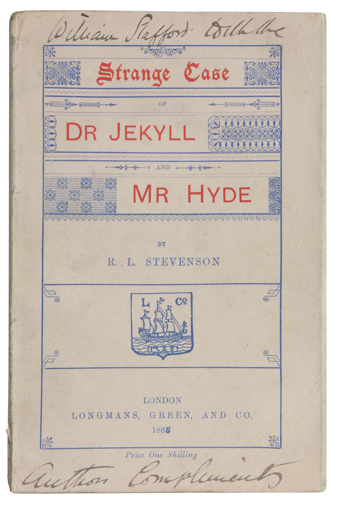

Strange Case of Dr Jekyll and Mr Hyde is a horror novella written by Robert Louis Stevenson and published in 1886.
While this book may be old, its influence can still be seen in today's pop culture.
This website will explore some of its history, its author and its impact while trying
to remain as spoiler-free as possible.

Keep in mind that the original book is now in the public domain in many countries
and is available to read online for free!
Click here
to read the original text.